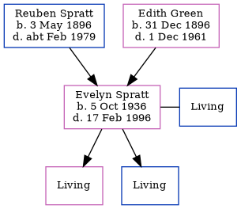

Evelyn Maud Wickham (née Spratt) 1936 - 1996
[ Home ] | [ Calendar ] | [ Surnames Index ] | [ Family History ]The daughter of Reuben Spratt (an agricultural laborer) and Edith Green, Evelyn Spratt, the first cousin once-removed on the father's side of Nigel Horne, was born in Thanet, Kent, England on Oct 5, 19361,2,3,4 and. She married Cyril Wickham (with whom she had 2 surviving children Carol A and Clive D) in Thanet around Nov 19565. On Sep 29, 1939, she lived at 2 Alma Place, Margate, Kent, England.
She died on Feb 17, 1996 in Thanet2,4.
Parents
- Reuben was born on May 3, 1896
- Edith Maud Caroline was born on Dec 31, 1896
Citations
- England & Wales births 1837-2006 - Findmypast
- England & Wales deaths 1837-2007 - Findmypast
- England & Wales, Birth Index: 1916-2005 Online publication - Provo, UT, USA: The Generations Network, Inc., 2008.Original data - General Register Office. England and Wales Civil Registration Indexes. London, England: General Register Office. © Crown copyright. Published by permission of the Cont
- England & Wales, Death Index: 1984-2005 Online publication - Provo, UT, USA: The Generations Network, Inc., 2007.Original data - General Register Office. England and Wales Civil Registration Indexes. London, England: General Register Office. © Crown copyright. Published by permission of the Cont
- England & Wales, Marriage Index: 1916-2005 Online publication - Provo, UT, USA: The Generations Network, Inc., 2009.Original data - General Register Office. England and Wales Civil Registration Indexes. London, England: General Register Office. © Crown copyright. Published by permission of the Cont
Media
1939 Register Transcription - TNA-R39-1755-1755D-006-38
England & Wales births 1837-2006 - BMD/B/1936/4/AZ/001038/019
England & Wales marriages 1837-2005 - BMD/M/1956/4/AZ/001071/042
England & Wales deaths 1837-2007 - BMD/D/1996/2/81708899
Family Tree
Generated by Ged2Site. Last updated on Jul 20, 2025